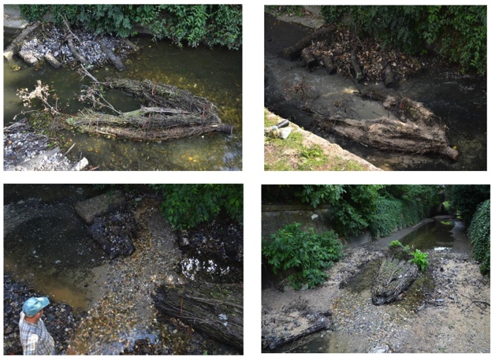
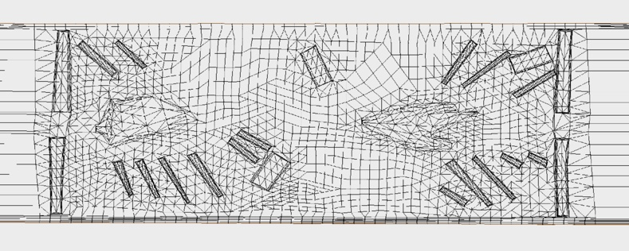
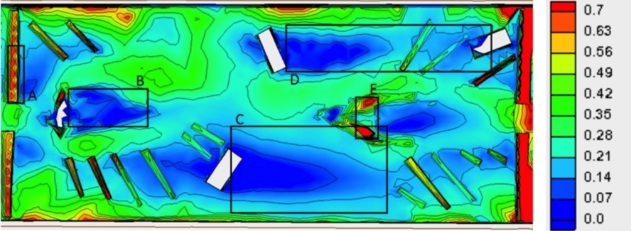

Computational study of the flow in a river stretch for ecological purposes
As part of my Bachelor's in Civil Engineering thesis, I used a computational model to evaluate the hydrological processes in a river stretch to understand how the morphology of the river bed affected the ecosystems in the river.
The subject of my bachelor's thesis was to evaluate the habitat conditions of a structurally enhanced urban river. The enhancement was studied due to the European Water Framework Directive, which establishes a further classification and the Heavily Modified Water Bodies (water bodies which have significantly changed their original appearance) have to achieve a good ecological potential. The river contemplated in this study was the urban stretch of the Münstersche Aa, where the necessary changes to achieve a good ecological potential had to be done in the 2 km urban stretch. This river had been modified to have a capacity for a 100-years return flood. Hence, the enhancements had to be implemented without compromising the capacity of the channel. In order to analyze the structural enhancement of the river a test section was developed by the Institute of Water Resources Environment. In the test section some habitat enhancement structures were implemented as well as materials for a granular river bed. The riverbed enhancements can be seen in Figure 1.

Figure 1: Obstacles present in the river stretch.
The geometry and mesh were generated using the software SMS (see the mesh in Figure 2) and the computations were carried out using the software HYDRO_AS-2D, which used a finite-volume scheme to solve the Navier-Stokes equations. With these softwares the flow over the test section was simulated for different characteristic discharges. The results of the simulations were evaluated in order to see if the test section offers good water flow features. Within this study the velocities water depths and Froude number in the vicinity and over the habitats under different hydraulic conditions were analysed (see the Froude for storm conditions in Figure 3). These results were used to identify the habitable areas of the stretch that the enhancements were creating.

Figure 2: Geometry and mesh of the model.

Figure 3: Froude number in the river stretch for storm conditions. The squares identify areas with low Froude numbers for potential habitats.